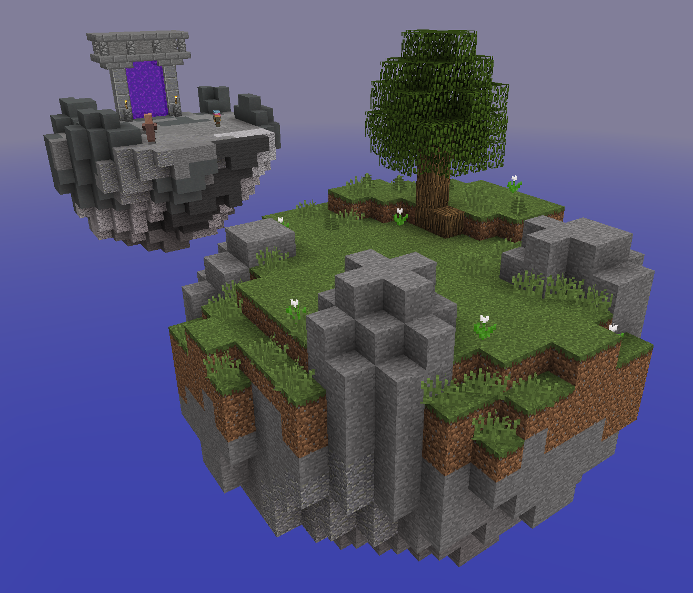
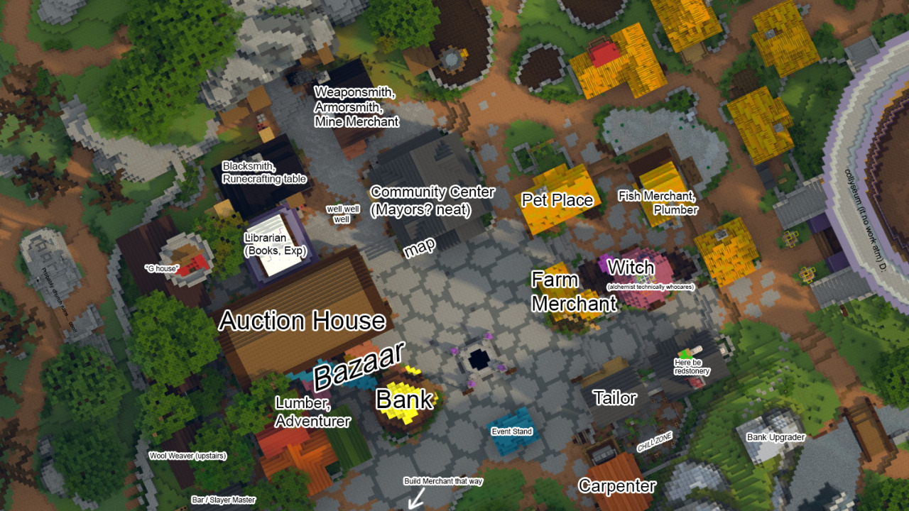
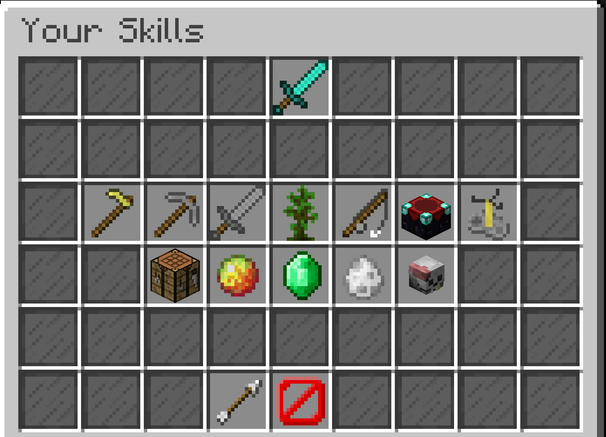
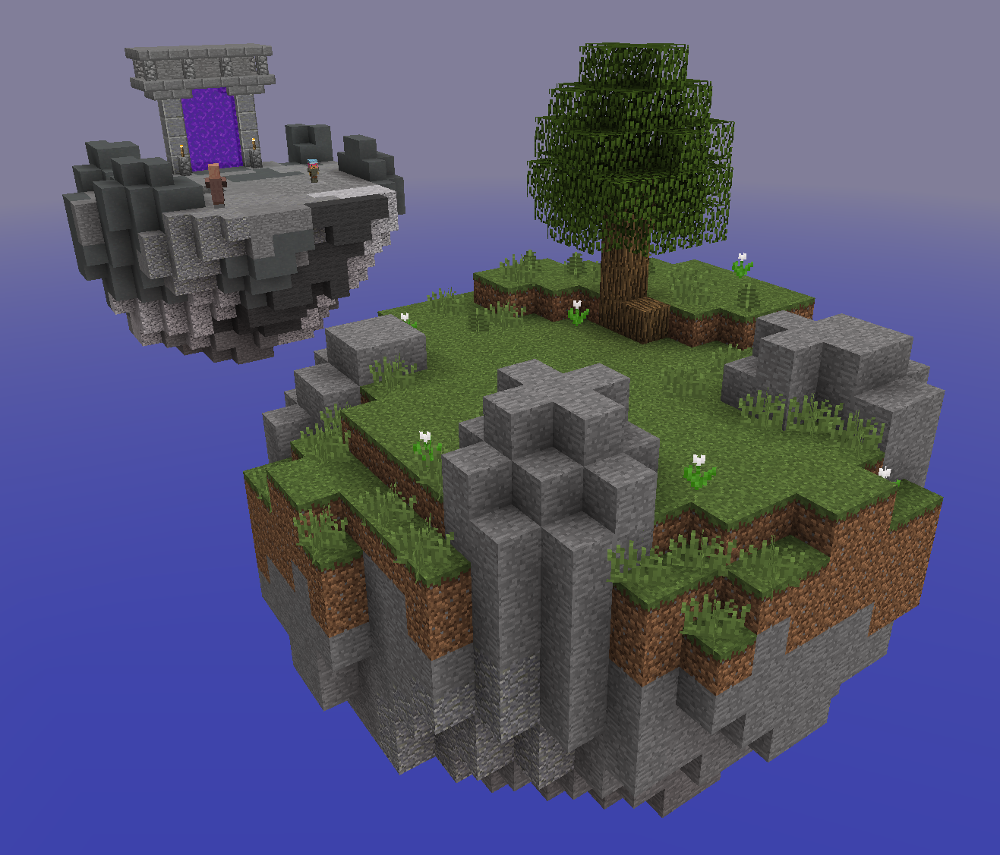
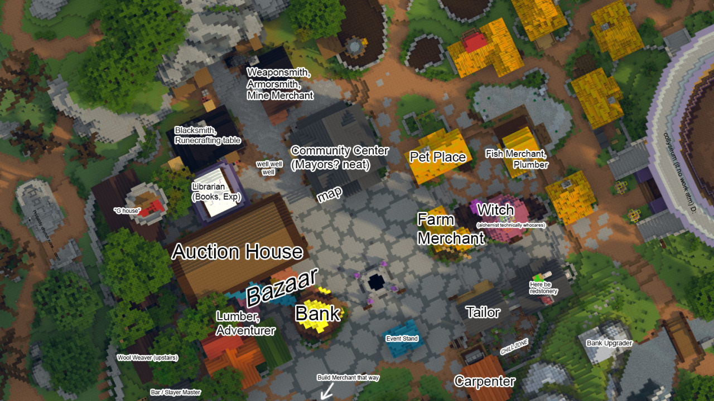
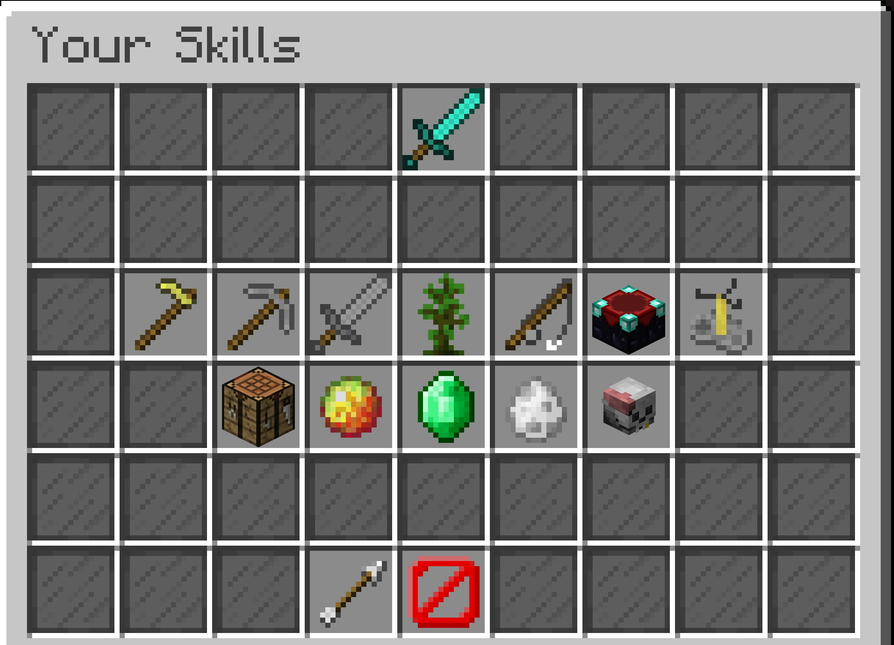

Your Skyblock Island:
The Hub:
The Skills Menu:
Your Skyblock Island:
The Hub:
The Skills Menu:
When you join Hypixel Skyblock for the first time, you spawn on an island on a brand new profile on the normal gamemode, standard. Although there are different gamemodes that alter how you play skyblock, we will mostly focus on the standard gamemode, although this guide will go over the different gamemodes.
The island that you spawn on has a single tree put down near the edge of the island. A few dozen blocks away is another island, with a portal on it. The first thing you would want to do is mine down the entire tree, and use the wood you get from it to bridge over the other island. In order to do that you will have to open the skyblock menu, which you can do by right-clicking the nether star in the last slot in your hotbar. Click the crafting table, and turn all your wood into oak planks, which will give you enough blocks to bridge over. You can learn more about the skyblock menu by clicking here.
Once you bridge over to the other island, you will notice a small npc mining the cobblestone around it. These are called minions, and you automatically get a free cobblestone minion every time you create a new profile. There are many different minions, and once you get into the mid-game part of skyblock they will start to get really useful. You can keep the minion there, but if you don't want it you can pick it up by right-clicking on it and pressing the icon that tells you to pick up the minion. Go back to the skyblock menu and press the storage button, then press the first ender chest page. You can put the minion into your ender chest, which you can access later.
Enter the portal on the island with the minion on it. Once you go through, you will enter the hub. The hub contains most things that you will need to progress in the game, and is where you will spent a lot of time in before you move into the mid-game part of skyblock. You should know that you have a purse, which is where the coins you get from doing certain actions go into. Coins are the main currency in skyblock, and are used to buy gear, weapons, blocks, and other items. Beware that if you die you lose half of the coins in your purse, so it's really important to leave your coins in the bank before going to a place where you could die. You will need to get a lot of them when you start out, so the first thing you will want to do is to unlock the bazaar. Open the skyblock menu again, and this time go to the skills category. You can learn more about skills by clicking here.
Skills are one of the most important properties in Hypixel skyblock, and can shape what kind of skyblock person you are. You can level up certain skills by doing actions that can level them up. (Mining = mining xp, killing mobs = combat xp, etc.) The first thing you would want to do is to level up your foraging, farming, and mining skills to be able to access the bazaar, which is essential for making money, and can even benefit late-game players. Find the mine merchant, who is next to the weapon merchant. You will need to craft a gold pickaxe. To do that, walk around the hub and talk to as many of the villagers with green sparkles above their head. They will give you useful information as well as 10 coins. Once you talk to most of them you should have enough coins to go back to the mine merchant and buy 4 gold ingots. Use the gold ingots to buy a gold pickaxe, then go into the coal mine and start mining coal and cobblestone for mining xp.
Once you reach Mining 1, head into the gold mine. Talk to the lazy miner at the entrance, and go down into the mines to find his pickaxe. Use that pickaxe to mine gold until you reach Mining 5. Once you reach Mining 5, head into the deep caverns. Here there are dangerous mobs, but using your rogue sword you got from one of the villagers, avoid the mobs as much as you can while making your way down the mine. There are six sub-mines. They are the Gunpowder Mines, Lapis Quarry, Pigman's Den, Slimehill, Diamond Reserve, and Obsidian Sanctuary. Go down the mine getting ores as you go, until you can start mining the diamonds at the very bottom. This will get you to Mining 7.
To get Farming 7, head to the wheat farms and start punching wheat. This alone will get you to Farming 7. To get Foraging 7, craft a gold axe and go to the forest. Chop down oak trees until you get to Foraging 7. Now you will be able to unlock the Bazaar.